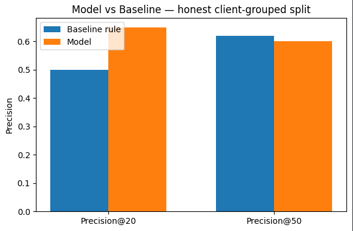
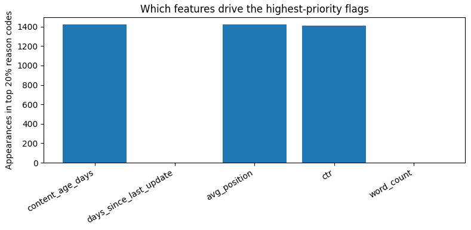
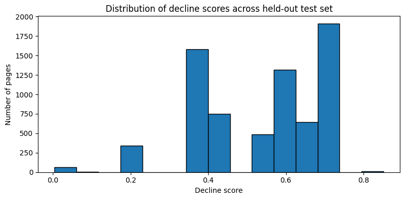

Abstract
Question → method → result, in five sentences
This paper asks which content pages in a large search portfolio are likely declining in visibility, and what a reviewer should check first. We trained a Decision Tree classifier on five features known before any decision is made about a page — content age, days since last update, average position, click-through rate, and word count — using FlyRank's anonymized content-performance data. Validation used a client-grouped split rather than a random one, to prevent the model from memorizing client identity instead of learning a generalizable pattern; a leakage audit further excluded one candidate feature whose time window overlapped the label's own construction. On this honest split, the model reached Precision@20 of 0.650 against a hand-written baseline's 0.500, while the baseline held a narrow edge at Precision@50 (0.620 vs 0.600). The validated scores feed a ranked, reason-coded action queue with explicit human-review requirements and a documented no-go list — a decision-support shortlist, not a certainty score, meant to help a content team spend limited review time where it counts most.
Introduction
The problem this work supports
A content team managing a large portfolio cannot manually review every page for signs of decline. Early exploration of this dataset showed the scale of the problem directly: of roughly 30,000 active content pages sampled, 16,262 — over half — were already labeled as trending down in the most recent 30-day window. At the same time, a simple positional pattern was visible immediately: pages ranking on page one of search results averaged a 35.5% click-through rate, against just 5.5% for pages ranked in the "deep" tier. Both facts point the same direction — there is a large enough pool of at-risk pages, and a measurable enough pattern, to justify building a ranked review system rather than relying on manual spot-checks or a single fixed rule.
Data
Source, scope, and what was excluded
Source. FlyRank's ML Internship data warehouse (fact_content_daily_performance), accessed through a read-only, gated release. One row represents one content page, for one client, on one day.
Modeling dataset. An anonymized starter export of ~30,000 active content pages (content_refresh_anonymized.csv), drawn from the warehouse's broader monthly slices (a single explored month, 2026-03, alone spanned 9.8 million rows).
Label. is_declining_label = 1 when a page's trend_direction reads "down" — a 30-day-vs-prior-30-day impressions comparison. This is a proxy for "worth reviewing now," not a confirmed long-term outcome.
What was excluded, and why
- Any internal product decision flags (e.g. health score, priority score, action type) — not present in the modeling export, and would count as leakage if reconstructed, since they encode a decision already made rather than an independent signal.
- 90-day impressions as a feature — evaluated and dropped after a leakage audit found its window overlaps the label's own 30-day construction (see Methodology).
- Client identity as a feature — used only to define the validation split boundary, never shown or passed to the model.
- No client names, domains, URLs, or private queries appear anywhere in this paper, its notebooks, or its outputs.
Methodology
Assumptions, features, validation design, leakage checks
Task framing. A hybrid classification-and-ranking task: pages are first classified as likely declining or not, then the model's predicted probability becomes a ranked score — because a reviewer needs an ordered shortlist, not a binary flag.
Model. A Decision Tree (max_depth=4, class_weight="balanced"), chosen for interpretability. A decision-support tool needs a traceable "why," not a black-box number.
Final feature set. content_age_days, days_since_last_update, avg_position, ctr, word_count.
Success metric. Precision@K, at K=20 and K=50 — chosen because a reviewer only checks the top of the queue, so what matters is how many of the top K flagged pages are genuinely declining, not accuracy across the full portfolio.
Baseline. A hand-written rule — pages with 180+ days since their last update and 500+ impressions in the last 90 days, scored proportional to traffic. This rule was validated on its own first: among the pages matching "stale and visible," 94.1% were genuinely declining, versus 54.2% among all other pages — confirming the signal was real before using it as a comparison point.
Validation design. A client-grouped split (75/25, zero client overlap confirmed between train and test) rather than a random split. Pages from the same client share structural similarities; a random split risks the model memorizing client identity instead of a generalizable pattern. Run side-by-side, the random split overstated Precision@20 by as much as 25 points relative to the honest, grouped split — a direct, measured demonstration of the risk.
Leakage checks. Two passes: (1) confirming the score is built only from features known before any decision was made about a page, never from the label itself or a downstream product flag; (2) testing impressions_90d specifically — it showed near-zero correlation with the label (-0.018), and removing it did not hurt held-out precision, so it was dropped as a precaution against its partial window overlap with the label.
Results
Model vs. baseline, same honest split
| Metric | Baseline rule | Model | Which is ahead |
|---|---|---|---|
| Precision@20 | 0.500 | 0.650 | Model, +0.150 |
| Precision@50 | 0.620 | 0.600 | Baseline, +0.020 |

Neither method dominates across both metrics. The model pulls ahead at the very top of the queue (Precision@20), where reviewer time is most limited and precision matters most — while the baseline holds a narrow edge once the net widens to the top 50. This is consistent with the model's own decision paths: it flags pages the single-threshold baseline structurally cannot see — 2,896 held-out pages where the model was confident (>0.7) but the baseline scored zero, of which 58.6% were genuinely declining.

content_age_days, avg_position, and ctr dominate; days_since_last_update and word_count rarely appear at the very top.
Limitations & Honest Framing
What this work cannot claim
Correlational, not causal. This work observes patterns — it does not prove that refreshing a flagged page will cause traffic to recover. That would require an actual experiment.
No claims about Google's algorithm. This paper describes patterns in FlyRank's own anonymized data only.
Proxy label. The decline label reflects a 30-day momentum window, not a confirmed long-term outcome — it can be noisy (seasonality, a temporary dip).
Portfolio-specific. Trained and validated on this portfolio only; not yet validated on unseen brands, industries, or markets.
Coarse model. A shallow tree means many pages share an identical score — this is a triage signal, not a precise per-page ranking.
Moderate precision. Roughly one in three to one in two flagged pages in the top 20–50 will not actually be declining. This is a shortlist for human review, never the sole basis for an action.
Single-snapshot validation. Results come from one historical split; performance has not yet been checked on a rolling, live basis.
No engagement signal at scale. Session-level engagement data covers only a small fraction of the full warehouse; this model relies on search-console and content-metadata signals instead.
Ranked Recommendations
From score to action — the playbook this paper ships with
Archetype → action mapping
- High decline score + stale: refresh candidate — update facts and examples, resubmit for recrawl.
- High decline score + weak position, recently updated: likely a relevance issue, not a freshness one — review content-market fit before refreshing again.
- High decline score + thin content: expansion candidate — add missing subtopics and depth, not a light edit.
- Low decline score, strong position: leave alone; monitor only.
Sample of the ranked queue
| Rank | Decline score | Reason (summary) |
|---|---|---|
| 1 | 0.85 | Weak avg. position; long stretch since last update |
| 2 | 0.85 | Weak avg. position; older content age |
| 3 | 0.85 | Weak avg. position; younger, but still flagged |
| … | … | … |
Full queue regenerated on demand from work/notebooks/w07_action_playbook.ipynb — not committed as raw data, by design (see Reproducibility).
Human review is required
Before any action from this queue is taken, a reviewer must confirm the page is actually declining against current data, check for an explainable cause (seasonality, migration, algorithm update), and read the page itself — the model has no access to writing quality, accuracy, or brand voice.
What should never be automated
- Auto-publishing content changes without editorial review.
- Auto-deleting, de-indexing, or redirecting pages from a score alone.
- Using the score as a performance metric for individual writers.
- Presenting the score to a client as certainty rather than a triage signal.
Monitoring & retrain triggers
Re-validate when Precision@20 on a fresh client-grouped sample drops below ~0.55, the label definition changes, roughly 90 days pass since the last check, or a structurally new client segment joins the portfolio.
Reproducibility
Everything here can be rerun
- Full repository — every weekly notebook plus this capstone.
- work/notebooks/capstone.ipynb — this paper's source notebook.
- work/notebooks/w07_action_playbook.ipynb — the ranked action queue in full.
- work/outputs/w07_metrics.json — the metrics every number here traces back to.